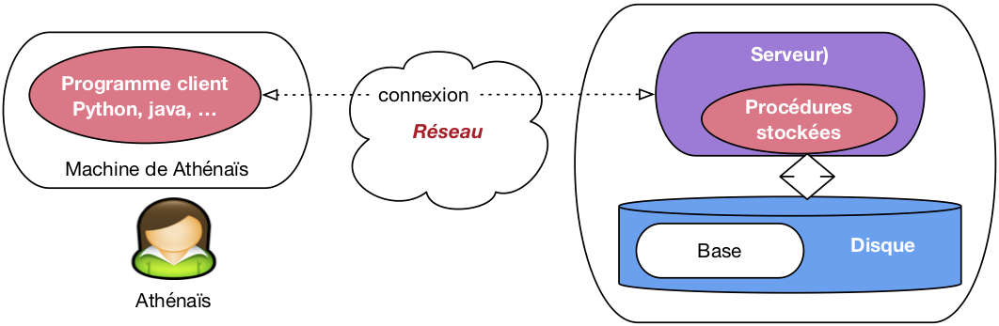

Procédures et déclencheurs¶
Le langage SQL n’est pas un langage de programmation au sens courant du terme. Il ne permet pas, par exemple, de définir des fonctions ou des variables, d’effectuer des itérations ou des instructions conditionnelles. Il ne s’agit pas d’un défaut dans la conception du langage, mais d’une orientation délibérée de SQL vers les opérations de recherche de données dans une base volumineuse, la priorité étant donnée à la simplicité et à l’efficacité. Ces deux termes ont une connotation forte dans le contexte d’un langage d’interrogation, et correspondent à des critères (et à des contraintes) précisément définis. La simplicité d’un langage est essentiellement relative à son caractère déclaratif, autrement dit à la capacité d’exprimer des recherches en laissant au système le soin de déterminer le meilleur moyen de les exécuter. L’efficacité est, elle, définie par des caractéristiques liées à la complexité d’évaluation sur lesquelles nous ne nous étendrons pas ici. Signalons cependant que la terminaison d’une requête SQL est toujours garantie, ce qui n’est pas le cas d’un programme écrit dans un langage plus puissant, .
Il est donc clair que SQL ne suffit pas pour le développement d’applications, et tous les SGBD relationnels ont, dès l’origine, proposé des interfaces permettant de l’associer à des langages plus classiques comme le C ou Java. Ces interfaces de programmation permettent d’utiliser SQL comme outil pour récupérer des données dans des programmes réalisant des tâches très diverses : interfaces graphiques, traitements « batch », production de rapports ou de sites web, etc. D’une certaine manière, on peut alors considérer SQL comme une interface d’accès à la base de données, intégrée dans un langage de programmation généraliste. Il s’agit d’ailleurs certainement de son utilisation la plus courante.
Pour certaines fonctionnalités, le recours à un langage de programmation « externe » s’avère cependant inadapté ou insatisfaisant. Une évolution des SGBD consiste donc à proposer, au sein même du système, des primitives de programmation qui viennent pallier le manque relatif d’expressivité des langages relationnnels. Le présent chapitre décrit ces évolutions et leur application à la création de procédures stockées et de déclencheurs (triggers). Les premières permettent d’enrichir un schéma de base de données par des calculs ou des fonctions qui ne peuvent pas - parfois même dans des cas très simples - être obtenus avec SQL ; les seconds étendent la possibilité de définir des contraintes.
Parallèlement à ces applications pratiques, les procédures stockées illustrent simplement les techniques d’intégration de SQL à un langage de programmation classique, et soulignent les limites d’utilisation d’un langage d’interrogation, et plus particulièrement du modèle relationnel.
S1. Procédures stockées¶
Supports complémentaires:
Comme mentionné ci-dessus, les procédures stockées constituent une alternative à l’écriture de programmes avec une langage de programmation généraliste. Commençons par étudier plus en détail les avantages et inconvénients respectifs des deux solutions avant d’entrer dans les détails techniques.
Rôle et fonctionnement des procédures stockées¶
Une procédure stockée s’exécute au sein du SGBD, ce qui évite les échanges réseaux qui sont nécessaires quand les mêmes fonctionnalités sont implantées dans un programme externe communiquant en mode client/serveur avec la base de données. La Fig. 49 illustre la différence entre les deux mécanismes. À gauche un programme externe, écrit par exemple en Java ou en Python, doit tout d’abord se connecter au serveur du SGBD. Le programme s’exécute alors en communiquant avec le serveur pour exécuter les requêtes et récupérer les résultats. Dans cette architecture, chaque demande d’exécution d’un ordre SQL implique une transmission sur le réseau, du programme vers le client, suivie d’une analyse de la requête par le serveur, de sa compilation et de son exécution (Dans certains cas les requêtes du programme client peuvent être précompilées, ou « préparées »). Ensuite, chaque fois que le programme client souhaite récupérer un n-uplet du résultat, il doit effectuer un appel externe, via le réseau. Tous ces échanges interviennent de manière non négligeable dans la performance de l’ensemble, et cet impact est d’autant plus élevé que les communications réseaux sont lentes et/ou que le nombre d’appels nécessaires à l’exécution du programme est important.
{kind=link}

Fig. 49 Comparaison programmes externes/procédures stockées¶
Le recours à une procédure stockée permet de regrouper du côté serveur l’ensemble des requêtes SQL et le traitement des données récupérées. La procédure est compilée une fois par le SGBD, au moment de sa création, ce qui permet de l’exécuter rapidement au moment de l’appel. De plus les échanges réseaux ne sont plus nécessaires puisque la logique de l’application est étroitement intégrée aux requêtes SQL. Le rôle du programme externe se limite alors à se connecter au serveur et à demander l’exécution de la procédure, en lui passant au besoin les paramètres nécessaires.
Bien entendu, en pratique, les situations ne sont pas aussi tranchées et le programme externe est en général amené à appeler plusieurs procédures, jouant en quelque sorte le rôle de coordinateur. Si les performances du système sont en cause, un recours judicieux aux procédures stockées reste cependant un bon moyen de réduire le trafic client-serveur.
L’utilisation de procédures stockées est par ailleurs justifiée, même en l’absence de problèmes de performance, pour des fonctions très « sensibles », terme qui recouvre (non exclusivement) les cas suivants :
la fonction est basée sur des règles complexes qui doivent être implantées très soigneusement ;
la fonction met à jour des données dont la correction et la cohérence sont indispensable au bon fonctionnement de l’application ;
la fonction évolue souvent.
On est souvent amené, quand on développe une application, à utiliser plusieurs langages en fonction du contexte : le langage C ou Java pour les traitements batch, PHP ou Python pour l’interface web, un générateur d’application propriétaire pour la saisie et la consultation à l’écran, un langage de script pour la production de rapports, etc. Il est important alors de pouvoir factoriser les opérations de base de données partagées par ces différents contextes, de manière à les rendre disponibles pour les différents langages utilisés. Par exemple la réservation d’un billet d’avion, ou l’exécution d’un virement bancaire, sont des opérations dont le fonctionnement correct (pas deux billets pour le même siège ; pas de débit sans faire le crédit correspondant) et cohérent (les mêmes règles doivent être appliquées, quel que soit le contexte d’utilisation) doit toujours être assuré.
C’est facile avec une procédure stockée, et cela permet d’une part d’implanter une seule fois des fonctions « sensibles », d’autre part de garantir la correction, la cohérence et l’évolutivité en imposant l’utilisation systématique de ces fonctions au lieu d’un accès direct aux données.
Enfin, le dernier avantage des procédures stockées est la relative facilité de programmation des opérations de bases de données, en grande partie à cause de la très bonne intégration avec SQL. Cet aspect est favorable à la qualité et à la rapidité du développement, et aide également à la diffusion et à l’installation du logiciel puisque les procédures sont compilées par les SGBD et fonctionnent donc de manière identique sur toute les plateformes.
Il existe malheureusement une contrepartie à tous ces avantages : chaque éditeur de SGBD propose sa propre extension procédurale pour créer des procédures stockées, ce qui rend ces procédures incompatibles d’un système à un autre. Cela peut être dissuasif si on souhaite produire un logiciel qui fonctionne avec tous les SGBD relationnels.
La description qui suit se base sur le langage PL/SQL d’Oracle (« PL » signifie Procedural Language) qui est sans doute le plus riche du genre. Le même langage, simplifié, avec quelques variantes syntaxiques mineures, est proposé par PostgreSQL, et les exemples que nous donnons peuvent donc y être transposés sans trop de problème. Les syntaxes des langages utilisés par d’autres systèmes sont un peu différentes, mais tous partagent cependant un ensemble de concepts et une proximité avec SQL qui font de PL/SQL un exemple tout à fait représentatif de l’intérêt et de l’utilisation des procédures stockées.
Introduction à PL/SQL¶
Nous allons commencer par quelques exemples très simples, appliqués à la base Films, afin d’obtenir un premier aperçu du langage. Le premier exemple consiste en quelques lignes permettant d’afficher des statistiques sur la base de données (nombre de films et nombre d’artistes). Il ne s’agit pas pour l’instant d’une procédure stockée, mais d’un code qui est compilé et exécuté en direct.
-- Exemple de bloc PL/SQL donnant des informations sur la base
DECLARE
-- Quelques variables
v_nbFilms integer;
v_nbArtistes integer;
begin
-- Compte le nombre de films
select count(*) into v_nbFilms from Film;
-- Compte le nombre d'artistes
select count(*) into v_nbArtistes from Artiste;
-- Affichage des résultats
DBMS_outPUT.PUT_LinE ('Nombre de films: ' || v_nbFilms);
DBMS_outPUT.PUT_LinE ('Nombre d''artistes: ' || v_nbArtistes);
exception
when others then
DBMS_outPUT.PUT_LinE ('Problème rencontré dans StatsFilms');
end;
/
Le code est structuré en trois parties
qui forment un « bloc » : déclarations des variables,
instructions (entre begin et end) et gestion des exceptions.
La première remarque importante est que les variables sont typées, et que les
types sont exactement ceux de SQL (ou plus largement les types supportés par le
SGBD, qui peuvent différer légèrement de la norme). Un autre aspect de
l’intégration forte avec SQL est la possibilité d’effectuer des requêtes,
d’utiliser dans cette requête des critères basés sur la valeur des variables de
la procédure, et de placer le résultat dans une (ou plusieurs) variables grâce à
la clause into. En d’autres termes on transfère directement des
données représentées selon le modèle relationnel et accessibles avec SQL,
dans des unités d’information manipulables avec les structures classiques (test
ou boucles) d’un langage impératif.
Les fonctions SQL fournies par le SGBD sont également utilisables, ainsi que
des librairies spécifiques à la programmation procédurale (des packages
chez orACLE). Dans l’exemple ci-dessus on utilise le package
DBMS_outPUT qui permet de produire des messages sur la sortie
standard (l’écran en général).
La dernière section du programme est celle qui gère les « exceptions ». Ce
terme désigne une erreur qui est soit définie par l’utilisateur en fonction de
l’application (par exemple l’absence d’un n-uplet, ou une valeur incorrecte
dans un attribut), soit engendrée par le système à l’exécution (par exemple une
division par zéro, ou l’absence d’une table). Au moment où une erreur est
rencontrée, PL/SQL redirige le flux d’exécution vers la section
exception où le programmeur doit définir les actions à entreprendre au
cas par cas. Dans l’exemple précédent, on prend toutes les exceptions
indifféremment (mot-clé others qui désigne le choix par défaut) et on
affiche un message.
Note
Un programme Pl/SQL peut être placé dans un fichier
et executé avec la commande start sous l’utilitaire de commandes.
par exemple:
SQL>start StatsFilms
En cas d’erreur de compilation, la commande SHOW ERRorS donne la liste
des problèmes rencontrés. Sinon le code est exécuté. Voici par exemple ce que
l’on obtient avec le code donné précédemment en exemple (La commande
set serveroutput on assure que les messages sont bien affichés à
l’écran..
SQL> set serveroutput on
SQL> start StatsFilms
Nombre de films: 48
Nombre d'artistes: 126
Voici maintenant un exemple de procédure stockée. On retrouve la même structuration que précédemment (déclaractions, instructions, exception), mais cette fois ce « bloc » est nommé, stocké dans la base au moment de la compilation, et peut ensuite être appelé par son nom. La procédure implante la règle suivante : l’insertion d’un texte dans la table des genres s’effectue toujours en majuscules, et on vérifie au préalable que ce code n’existe pas déjà.
-- Insère un nouveau genre, en majuscules, et en vérifiant
-- qu'il n'existe pas déjà
create or replace procedure InsereGenre (p_genre varchar) as
-- Déclaration des variables
v_genre_majuscules varchar(20);
v_count integer;
genre_existe exception;
begin
-- On met le paramètre en majuscules
v_genre_majuscules := UPPER(p_genre);
-- On vérifie que le genre n'existe pas déjà
select count(*) into v_count
from Genre where code = v_genre_majuscules;
-- Si on n'a rien trouvé: on insère
if (v_count = 0) then
insert into Genre (code) VALUES (v_genre_majuscules);
else
RAisE genre_existe;
end if;
exception
when genre_existe then
DBMS_outPUT.PUT_LinE('Le genre existe déjà en ' ||
v_count || ' exemplaire(s).');
end;
/
La procédure accepte des paramètres qui, comme les variables, sont typées. Le
corps de la procédure montre un exemple d’utilisation d’une fonction SQL
fournie par le système, ici la fonction UPPER qui prend une chaîne de
caractères en entrée et la renvoie mise en majuscules.
La requête SQL garantit que l’on obtient un et un seul n-uplet. Nous verrons
plus loin comment traiter le cas où le résultat de la requête est une table
contenant un nombre quelconque de n-uplets. Dans l’exemple ci-dessus on obtient toujours un
attribut donnant le nombre de n-uplets existants dans la table pour le code
que l’on veut insérer. Si ce nombre n’est pas nul, c’est que le genre existe
déjà dans la table, et on produit une « exception » avec la clause
RAisE exception, sinon c’est que le genre n’existe pas et on peut
effectuer la clause d’insertion, en indiquant comme valeurs à insérer celles
contenues dans les variables appropriées.
On peut appeler cette procédure à partir de n’importe quelle
application connectée au SGBD. Sous SQL*Plus
on utilise l’instruction execute.
Voici par
exemple ce que l’on obtient avec deux appels successifs.
SQL> execute InsereGenre('Policier');
SQL> execute InsereGenre('Policier');
Le genre existe déjà en 1 exemplaire(s).
Le premier appel s’est correctement déroulé puisque le genre « Policier » n’existait pas encore dans la table. Le second en revanche a échoué, ce qui a déclenché l’exception et l’affichage du message d’erreur.
On peut appeler InsereGenre() depuis un programme C,
Java, ou tout autre outil. Si on se fixe comme règle de toujours
passer par cette procédure pour insérer dans la table Genre,
on est donc sûr que les contraintes implantées dans la procédure
seront toujours vérifiées.
Note
Pour forcer les développeurs à toujours passer par
la procédure, on peut fixer les droits d’accès de telle
sorte que les utilisateurs orACLE aient le droit
d’exécuter InsereGenre(), mais pas de droit
de mise à jour sur la table Genre elle-même.
Voici un troisième exemple qui complète ce premier tour d’horizon rapide du langage. Il s’agit cette fois d’une fonction, la différence avec une procédure étant qu’elle renvoie une valeur, instance de l’un des types SQL. Dans l’exemple qui suit, la fonction prend en entrée l’identifiant d’un film et renvoie une chaîne de caractères contenant la liste des prénom et nom des acteurs du film, séparés par des virgules.
-- Fonction retournant la liste des acteurs pour un film donné
create or replace FUNCTIon MesActeurs(v_idFilm integer) RETURN varchar is
-- Le résultat
resultat varchar(255);
begin
-- Boucle prenant tous les acteurs du films
for art in
(select Artiste.* from Role, Artiste
where idFilm = v_idFilm and idActeur=idArtiste)
loop
if (resultat is NOT NULL) then
resultat := resultat || ', ' || art.prenom || ' ' || art.nom;
else
resultat := art.prenom || ' ' || art.nom;
end if;
end loop;
return resultat;
end;
/
La fonction effectue une requête SQL pour rechercher tous les acteurs du film dont l’identifiant est passé en paramètre. Contrairement à l’exemple précédent, cette requête renvoie en général plusieurs n-uplets. Une des caractéristiques principales des techniques d’accès à une base de données avec un langage procédural est que l’on ne récupère pas d’un seul coup le résultat d’un ordre SQL. Il existe au moins deux raisons à cela :
le résultat de la requête peut être extrêmement volumineux, ce qui poserait des problèmes d’occupation mémoire si on devait tout charger dans l’espace du programme client ;
les langages de programmation ne sont en général pas équipés nativement des types nécessaires à la représentation d’un ensemble de n-uplets.
Le concept utilisé, plus ou moins implicitement, dans toutes les interfaces permettant aux langages procéduraux d’accéder aux bases de données est celui de curseur. Un curseur permet de parcourir, à l’aide d’une boucle, l’ensemble des n-uplets du résultat d’une requête, en traitant le n-uplet courant à chaque passage dans la boucle. Ici nous avons affaire à la version la plus simple qui soit d’un curseur, mais nous reviendrons plus loin sur ce mécanisme.
Une fonction renvoie une valeur, ce qui permet de l’utiliser dans une requête SQL comme n’importe quelle fonction native du système. Voici par exemple une requête qui sélectionne le titre et la liste des acteurs du film dont l’identifiant est 5.
SQL> select titre, MesActeurs(idFilm) from Film where idFilm=5;
TITRE MESACTEURS(IDFILM)
------------ -----------------------------
Volte/Face John Travolta, Nicolas Cage
On peut noter que le résultat de la fonction MesActeurs() ne peut pas être
obtenu avec une requête SQL. Il est d’ailleurs intéressant de se demander
pourquoi, et d’en tirer quelques conclusions sur certaines limites de SQL.
Il est important de mentionner également qu’orACLE ne permet
pas l’appel, dans un ordre select de fonctions
effectuant des mises à jour dans la base : une requête
n’est pas censée entraîner des modifications, surtout
si elles s’effectuent de manière transparente pour l’utilisateur.
Syntaxe de PL/SQL¶
Voici maintenant une présentation plus systématique du langage PL/SQL. Elle vise à expliquer et illustrer ses principes les plus intéressants et à donner les éléments nécessaires à une expérimentation sur machine mais ne couvre cependant pas toutes ses possibilités, très étendues.
Types et variables¶
PL/SQL reconnaît tous les types standard de SQL,
plus quelques autres dont le type Boolean
qui peut prendre les valeurs TRUE
ou FALSE. Il propose également deux constructeurs permettant de créer des types
composés :
le constructeur
RECORDest comparable au schéma d’une table ; il décrit un ensemble d’attributs typés et nommés ;le constructeur
TABLEcorrespond aux classiques tableaux unidimensionnels.
Le constructeur RECORD est particulièrement
intéressant pour représenter un n-uplet d’une table,
et donc pour définir des variables servant
à stocker le résultat d’une requête SQL. On peut
définir soit-même un type avec RECORD,
avec une syntaxe très similaire à celle du
create TABLE.
DECLARE
-- Déclaration d'un nouveau type
TYPE adresse is RECORD
(no integer,
rue varchar(40),
ville varchar(40),
codePostal varchar(10)
);
Mais PL/SQL offre également un mécanisme extrêmement utile consistant à dériver
automatiquement un type RECORD en fonction d’une table ou d’un
attribut d’une table. On utilise alors le nom de la table ou de l’attribut,
associées respectivement au qualificateur %ROWTYPE ou à
%TYPE pour désigner le type dérivé. Voici
quelques exemples :
Film.titre%TYPEest le type de l’attributtitrede la tableFilm;
Artiste%ROWTYPEest un typeRECORDcorrespondant aux attributs de la tableArtiste.
Le même principe de dérivation automatique d’un type s’applique également aux requêtes SQL définies dans le cadre des curseurs. Nous y reviendrons au moment de la présentation de ces derniers.
La déclaration d’une variable consiste à donner son nom, son type, à indiquer si
elle peut être NULL et a donner éventuellement
une valeur initiale. Elle est de la forme :
<nomVariable> <typeVariable> [NOT NULL] [:= <valeurDéfaut>]
Il est possible de définir également des constantes, avec la syntaxe :
<nomConstante> ConSTANT <typeConstante> := <valeur>
Toutes les déclarations de variables ou de constantes doivent être comprises dans
la section DECLARE. Toute variable non initialisée est à NULL.
Voici quelques exemples de déclarations. Tous
les noms de variables sont systématiquement
préfixés par v_. Ce n’est pas
une obligation mais ce type
de convention permet de distinguer plus
facilement les variables de PL/SQL des attributs
des tables dans les ordres SQL.
DECLARE
-- Constantes
v_aujourdhui ConSTANT DATE := SYSDATE;
v_pi ConSTANT NUMBER(7,5) := 3.14116;
-- Variables scalaires
v_compteur integer NOT NULL := 1;
v_nom varchar(30);
-- Variables pour un n-uplet de la table Film et pour le résumé
v_film Film%ROWTYPE;
v_resume Film.resume%TYPE;
Structures de contrôle¶
L’affectation d’une variable est effectuée par l’opérateur
:= avec la syntaxe :
<nomVariable> := <expression>;
où expression est toute expression valide retournant
une valeur de même type que celle de la variable. Rappelons
que tous les opérateurs SQL (arithmétiques, concaténation
de chaînes, manipulation de dates) et toutes les fonctions
du SGBD sont utilisables en PL/SQL. Un autre manière
d’affecter une variable est d’y transférer
tout ou partie d’un n-uplet provenant d’une
requête SQL avec la syntaxe :
select <nomAttribut1>, [<nomAttribut2>, ...]
into <nomVariable1>, [<nomVariable2>, ... ]
from [...]
La variable doit être du même type que l’attribut correspondant de la clause select, ce
qui incite fortement à utiliser le type dérivé avec %TYPE. Dès que l’on veut transférer
plusieurs valeurs d’attributs dans des variables, on a sans doute intérêt à utiliser un type
dérivé %ROWTYPE qui limite le
nombre de déclarations à effectuer. L’exemple suivant
illustre l’utilisation de la clause select ... into
associée à des types dérivés. La fonction renvoie le titre
du film concaténé avec le nom du réalisateur.
-- Retourne une chaîne avec le titre du film et sont réalisateur
create or replace FUNCTIon TitreEtMES(v_idFilm integer) RETURN varchar is
-- Déclaration des variables
v_titre Film.titre%TYPE;
v_idMES Film.idMES%TYPE;
v_mes Artiste%ROWTYPE;
begin
-- Recherche du film
select titre, idMES
into v_titre, v_idMES
from Film
where idFilm=v_idFilm;
-- Recherche du metteur en scène
select * into v_mes from Artiste where idArtiste = v_idMES;
return v_titre || ', réalisé par ' || v_mes.prenom
|| ' ' || v_mes.nom;
end;
/
L’association dans la requête SQL de noms d’attributs et de noms de variables peut parfois s’avérer ambiguë d’où l’utilité d’une convention permettant de distinguer clairement ces derniers.
Les structures de test et de boucles sont tout à fait standard. La structure
conditionnelle est le if dont la syntaxe est la suivante :
if <condition> then
<instructions1>;
else
<instruction2>;
end if;
Les conditions sont exprimées comme dans une clause where
de SQL, avec notamment la possibilité de tester si une valeur est à NULL, des opérateurs
comme LIKE et les connecteurs usuels and, or et NOT.
Le else est optionnel, et peut éventuellement
être associé à un autre if, selon la syntaxe généralisée suivante :
if <condition 1> then
<instructions 1>;
ELSif <condition 2> then
<instruction 2>;
[...]
ELSif <condition n> then
<instruction n>;
else
<instruction n+1>;
end if;
Il existe trois formes de boucles : loop,
for et while. Seules les deux dernières sont
présentées ici car elles suffisent à tous les besoins
et sont semblables aux structures habituelles.
La boucle while répète un ensemble d’instructions
tant qu’une condition est vérifiée. La condition
est testée à chaque entrée dans la boucle. Voici la
syntaxe :
while <condition> loop
<instructions>;
end loop;
Rappelons que les expressions booléennes en SQL peuvent prendre trois valeurs :
TRUE, FALSE et UNKNOWN quand l’évaluation de l’expression rencontre une
valeur à NULL. Une condition est donc vérifiée quand elle prend la valeur TRUE,
et une boucle while s’arrête en cas de FALSE ou UNKNOWN.
La boucle for permet de répéter un ensemble
d’instructions pour chaque valeur d’un intervalle de nombres entiers.
La syntaxe est donnée ci-dessous. Notez les deux points
entre les deux bornes de l’intervalle, et la
possibilité de parcourir cet intervalle de haut en bas
avec l’option REVERSE.
for <variableCompteur> in [REVERSE] <min>..<max> loop
<instructions>;
end loop;
Des itérations couramment utilisées en PL/SQL consistent à parcourir le résultat d’une requête SQL avec un curseur.
Structure du langage¶
Le code PL/SQL est structuré en blocs. Un bloc comprend trois sections
explicitement délimitées : les déclarations, les
instructions (encadrée par begin et end) et les exceptions,
placées en général à la fin de la section d’instruction. On peut partout
mettre des commentaires, avec deux formes possibles :
soit une ligne commençant par deux tirets --,
soit, comme en C/C++, un texte de longueur quelconque
compris entre /* et */. La structure générale d’un bloc
est donc la suivante :
[DECLARE]
-- Déclaration des variables, constantes, curseurs et exceptions
begin
-- Instructions, requêtes SQL, structures de contrôle
exception
-- Traitement des erreurs
end;
Le bloc est l’unité de traitement de PL/SQL. Un bloc peut être anonyme. Il commence alors
par l’instruction DECLARE, et orACLE le compile et l’exécute dans la foulée au moment où
il est rencontré. Le premier exemple que nous avons donné est un bloc anonyme.
Un bloc peut également être nommé (cas des procédures et fonctions) et stocké.
Dans ce cas le DECLARE est remplacé par l’instruction create.
Le SGBD stocke la procédure ou la fonction et l’exécute quand on
l’appelle dans le cadre d’un langage de programmation.
La syntaxe de création d’une procédure stockée est donnée ci-dessous.
create [or replace] procedure <nomProcédure>
[(<paramètre 1>, ... <paramètre n>)] as
[<déclarations<]
begin
<instructions>;
[exception
<gestionExceptions>;
]
end;
La syntaxe des fonctions est identique, à l’exception
d’un RETURN <type> précédant le as
et indiquant le type de la valeur renvoyée.
Procédures et fonctions prennent en entrée
des paramètres selon la syntaxe suivante :
<nomParamètre> [in | out | in out] <type> [:= <valeurDéfaut>]
La déclaration des paramètres ressemble à celle des variables. Tous les types
PL/SQL sont acceptés pour les paramètres, notamment les types dérivés avec
%TYPE et %ROWTYPE, et on peut définir des valeurs par défaut. Cependant la longueur
des chaînes de caractères (CHAR ou varchar)
ne doit pas être précisée pour les paramètres. La principale différence avec la déclaration
des variables est le mode d’utilisation des paramètres
qui peut être in, out ou in out. Le mode détermine la manière dont les paramètres
servent à communiquer avec le programme appelant :
inindique que la valeur du paramètre peut être lue mais pas être modifiée ; c’est le mode par défaut ;
outindique que la valeur du paramètre peut être modifée mais ne peut pas être lue;
in outindique que la valeur du paramètre peut être lue et modifiée.
En d’autres termes les paramètres in permettent au programme appelant de passer des valeurs
à la procédure, les paramètres out permettent à la procédure de renvoyer des valeurs
au programme appelant, et les paramètres in out peuvent jouer les deux rôles.
L’utilisation des paramètres out permet à une fonction
ou une procédure de renvoyer plusieurs valeurs.
Gestion des erreurs¶
Les exceptions en PL/SQL peuvent être soit des erreurs renvoyées par le SGBD lui-même en cas
de manipulation incorrecte des données, soit des erreurs définies par le programmeur lui-même.
Le principe est que toute erreur rencontrée à l’exécution
entraîne la levée} (RAisE) d’une exception, ce qui amène le flux de l’exécution
à se dérouter vers la section exception du bloc courant. Cette section rassemble les
actions (exception handlers) à effectuer pour chaque type d’exception rencontrée.
Voici quelques-unes des exceptions les plus communes
levées par le SGBD.
inVALID_NUMBER, indique une conversion impossible d’une chaîne de caractères vers un numérique ;
inVALID_cursor, indique une tentative d’utiliser un nom de curseur inconnu ;
NO_DATA_found, indique une requête SQL qui ne ramène aucun n-uplet ;
TOO_MANY_ROWS, indique une requêteselect ... intoqui n’est pas traitée par un curseur alors qu’elle ramène plusieurs n-uplets.
Les exceptions utilisateurs doivent être définies dans la section de déclaration avec la syntaxe suivante.
<nomException> exception;
On peut ensuite lever, au cours de l’exécution d’un bloc PL/SQL, les
exceptions, systèmes ou utilisateurs, avec l’instruction RAisE.
RAisE <nomException>;
Quand une instruction RAisE est rencontrée, l’exécution PL/SQL est dirigée vers la section
des exceptions, et recherche si l’exception levée fait l’objet d’un traitement particulier.
Cette section elle-même consiste en une liste de conditions de le forme :
when <nomException> then
<traitementException>;
Si le nom de l’exception levée correspond à l’une des conditions de la liste,
alors le traitement correspondant est exécuté. Sinon c’est la section
others qui est utilisée. S’il n’y a pas de section gérant les
exceptions, l’exception est passée au programme appelant. La procédure
suivante montre quelques exemples d’exceptions.
-- Illustration des exceptions. La procédure prend un
-- identifiant de film, et met le titre en majuscules.
-- Les exceptions suivantes sont levées:
-- Exception système: NO_DATA_found si le film n'existe pas
-- Exception utilisateur: DEJA_FAIT si le titre
-- est déjà en majuscule
create or replace procedure TitreEnMajuscules (p_idFilm inT) as
-- Déclaration des variables
v_titre Film.titre%TYPE;
deja_fait exception;
begin
-- Recherche du film. Une exception est levée si on ne trouve rien
select titre into v_titre
from Film where idFilm = p_idFilm;
-- Si le titre est déjà en majuscule, on lève une autre
-- exception
if (v_titre = UPPER(v_titre)) then
RAisE deja_fait;
end if;
-- Mise à jour du titre
update Film set titre=UPPER(v_titre) where idFilm=p_idFilm;
exception
when NO_DATA_found then
DBMS_outPUT.PUT_LinE('Ce film n''existe pas');
when deja_fait then
DBMS_outPUT.PUT_LinE('Le titre est déjà en majuscules');
when others then
DBMS_outPUT.PUT_LinE('Autre erreur...');
end;
/
Voici quelques exécutions de cette procédure qui montrent comment les exceptions sont
levées selon le cas. On peut noter qu’orACLE considère comme une erreur
le fait un ordre select ne ramène aucun n-uplet,
et lève alors l’exception NO_DATA_found.
SQL> execute TitreEnMajuscules(900);
Le film n'existe pas
SQL> execute TitreEnMajuscules(5);
SQL> execute TitreEnMajuscules(5);
Le titre est déjà en majuscules
Quiz¶


S2. Les curseurs¶
Supports complémentaires:
Comme nous l’avons indiqué précédemment, les curseurs constituent un mécanisme de base dans les programmes accèdant aux bases de données. Ce mécanisme repose sur l’idée de traiter un n-uplet à la fois dans le résultat d’une requête, ce qui permet notamment d’éviter le chargement, dans l’espace mémoire du client, d’un ensemble qui peut être très volumineux.
Le traitement d’une requête par un curseur a un impact sur le style de programmation et l’intégration avec un langage procédural, sur les techniques d’évaluation de requêtes, et sur la gestion de la concurrence d’accès. Ces derniers aspects sont traités dans d’autres chapitres. La présentation qui suit est générale pour ce qui concerne les concepts, et s’appuie sur PL/SQL pour les exemples concrets. L’avantage de PL/SQL est de proposer une syntaxe très claire et un ensemble d’options qui mettent bien en valeur les points importants.
Déclaration d’un curseur¶
Un curseur doit être déclaré dans la section DECLARE du bloc PL/SQL. En général on
déclare également une variable dont le type est dérivé de la définition du curseur. Voici un exemple
de ces deux déclarations associées :
-- Déclaration d'un curseur
cursor MonCurseur is
select * from Film, Artiste
where idMES = idArtiste;
-- Déclaration de la variable
v_monCurseur MonCurseur%ROWTYPE;
Le type de la variable, MonCurseur%ROWTYPE, est le type automatiquement calculé par PL/SQL pour
représenter un n-uplet du résultat de la requête définie par le curseur MonCurseur. Ce typage
permet, sans avoir besoin d’effectuer des déclarations et d’énumérer de longues listes de variables
réceptrices au moment de l’exécution de la requête, de transférer très simplement chaque n-uplet du résultat
dans une structure du langage procédural. Nous verrons que les choses sont beaucoup plus laborieuses avec
un langage, comme le C, dont l’intégration avec SQL n’est pas du tout naturelle.
En général on utilise des curseurs paramétrés qui, comme leur nom
l’indique, intègrent dans la requête SQL une ou plusieurs variables dont les
valeurs, au moment de l’exécution, déterminent le résultat et donc l’ensemble
de n-uplets à parcourir. Enfin on peut, optionnellement, déclarer l’intention
de modifier les n-uplets traités par le curseur avec un update,
ce qui entraîne au moment de l’exécution quelques conséquences importantes sur
lesquelles nous allons revenir. La syntaxe générale d’un curseur est donc la
suivante :
cursor <nomCurseur> [(<listeParamètres>)]
is <requête>
[for update]
Les paramètres sont indiqués comme pour une procédure, mais le mode doit toujours être in
(cela n’a pas de sens de modifier le paramètre d’un curseur). Le
curseur suivant effectue la même jointure que précédemment, mais les films sont sélectionnés
sur l’année de parution grâce à un paramètre.
-- Déclaration d'un curseur paramétré
cursor MonCurseur (p_annee integer) is
select * from Film, Artiste
where idMES = idArtiste
and annee = p_annee;
Une déclaration complémentaire est celle des variables
qui vont permettre de recevoir les n-uplets au fur et à
mesure de leur parcours. Le type dérivé d’un curseur
est obtenu avec la syntaxe <nomCurseur>%ROWTYPE.
Il s’agit d’un type RECORD avec un champ
par correspondant à expression de la clause select.
Le type de chaque champ est aisément déterminé par le système. Déterminer le nom du champ
est un peu plus délicat car la clause select peut contenir des attributs (c’est le plus courant)
mais aussi des expressions construites sur ces attributs comme, par exemple, AVG(annee).
Il est indispensable dans ce dernier cas de donner
un alias à l’expression, qui deviendra le nom du champ dans le type dérivé. Voici un exemple
de cette situation :
-- Déclaration du curseur
cursor MonCurseur is
select prenom || nom as nomRéalisateur, anneeNaiss, count(*) as nbFilms
from Film, Artiste
where idMES = idArtiste
-- Déclaration d'une variable associée
v_realisateur MonCurseur%ROWTYPE;
Le type dérivé a trois champs, nommés respectivement nomRealisateur,
anneeNaiss et nbFilms.
Exécution d’un curseur¶
Un curseur est toujours exécuté en trois phases :
ouverture du curseur (ordre
open) ;parcours du résultat en itérant des ordres
fetchautant de fois que nécessaire ;fermeture du curseur (
close).
Il faut bien être conscient de la signification de ces trois phases. Au moment du open, le SGBD va analyser
la requête, construire un plan d’exécution (un programme d’accès aux fichiers) pour calculer le résultat, et initialiser
ce programme de manière à être en mesure de produire un n-uplet dès qu’un fetch est reçu. Ensuite,
à chaque fetch, le n-uplet courant est envoyé par le SGBD au curseur, et le plan d’exécution se prépare
à produire le n-uplet suivant.
En d’autres termes le résultat est déterminé au moment du open, puis
exploité au fur est à mesure de l’appel des fetch. Quelle que soit la
période sur laquelle se déroule cette exploitation (10 secondes, 1 heure ou une
journée entière), le SGBD doit assurer que les données lues par le curseur
refléteront l’état de la base au moment de l’ouverture du curseur. Cela
signifie notamment que les modifications effectuées par
d’autres utilisateurs, ou par le programme client (c’est-à-dire celui qui exécute le curseur) lui-même,
ne doivent pas être visibles au moment du parcours du résultat.
Les systèmes relationnels proposent différents niveaux d’isolation pour assurer ce type de comportement (pour en savoir plus, voir le chapitre sur la concurrence d’accès dans http://sys.bdpedia.fr). Il suffit d’imaginer ce qui se passerait si le curseur était sensible à des insertions, mises à jour ou suppressions effectuées pendant le parcours du résultat. Voici par exemple un pseudo-code montrant une situation où le parcours du curseur ne finirait jamais !
-- Un curseur qui s'exécute indéfiniment
open du curseur sur la table T;
while (fetch du curseur ramène un n-upletdans T) loop
Insérer un nouveau n-uplet dans T;
end loop;
close du curseur;
Chaque passage dans le where entraîne l’insertion d’un nouveau
n-uplet, et on se sortirait donc jamais de la boucle
si le curseur prenait en compte ce dernier.
D’autres situations, moins caricaturales, et résultant
d’actions effectuées par d’autres utilisateurs, poseraient des problèmes également. Le
SGBD assure que le résultat est figé au moment du open puisque c’est à ce moment-là que la requête est constituée
et – au moins conceptuellement – exécutée. On dit que le résultat d’un curseur est immuable
(immutable en anglais).
Une solution triviale pour satisfaire cette contrainte est le
calcul complet du résultat au moment du open,
et son stockage dans une table temporaire.
Cette technique présente cependant de nombreux
inconvénients :
il faut stocker le résultat quelque part, ce qui est pénalisant s’il est volumineux ;
le programme client doit attendre que l’intégralité du résultat soit calculé avant d’obtenir le premièr n-uplet ;
si le programme client souhaite effectuer des mises à jour, il faut réserver des n-uplets qui ne seront peut-être traités que dans plusieurs minutes voire plusieurs heures.
Dire que le résultat est immuable
ne signifie par forcément qu’il est calculé et matérialisé quelque part.
Les chapitres consacrés à l’évaluation de requêtes et à la concurrence d’accès dans http://sys.bdpedia.fr
décrivent en détail
les techniques plus sophistiquées pour gérer les curseurs.
Ce qu’il faut retenir ici (et partout où nous parlerons de curseur), c’est que
le résultat d’une requête n’est pas forcément pré-calculé dans son intégralité
mais peut être construit, utilisé puis détruit au fur et à mesure de
l’itération sur les ordres fetch.
Ce mode d’exécution explique certaines restrictions qui semblent étranges si on n’en est pas averti. Par exemple un curseur ne fournit pas d’information sur le nombre de n-uplets du résultat, puisque ces n-uplets, parcourus un à un, ne permettent pas de savoir à l’avance combien on va en rencontrer. De même, on ne sait pas revenir en arrière dans le parcours d’un résultat puisque les n-uplets produits ne sont parfois pas conservés.
Il existe dans la norme une option SCROLL indiquant que l’on peut
choisir d’aller en avançant ou en reculant sur l’ensemble des n-uplets. Cette
option n’est disponible dans aucun système, du moins à l’heure où ces lignes
sont écrites. Le SCROLL est problématique puisqu’il impose de
conserver au SGBD le résultat complet pendant toute la durée de vie du curseur,
l’utilisateur pouvant choisir de se déplacer d’avant en arrière sur l’ensemble
des n-uplets. Le SCROLL est difficilement compatible avec la technique
d’exécution employés dans tous les SGBD, et qui ne permet qu’un seul parcours
séquentiel sur l’ensemble du résultat.
Les curseurs PL/SQL¶
La gestion des curseurs dans PL/SQL s’appuie sur une syntaxe
très simple et permet, dans un grand nombre de cas, de limiter au maximum les déclarations et instructions
nécessaires. La manière la plus générale de traiter un curseur, une fois sa déclaration effectuée,
et de s’appuyer sur les trois instructions open, fetch et close dont
la syntaxe est donnée ci-dessous.
open <nomCurseur>[(<valeursParamètres>)];
fetch <nomCurseur> into <variableRéceptrice>;
close <nomCurseur>;
La (ou les) variable(s) qui suivent le into doivent correspondre au type d’un n-uplet du résultat.
En général on utilise une variable déclarée avec le type dérivé du curseur, <nomCurseur>%ROWTYPE.
Une remarque importante est que les curseurs ont l’inconvénient d’une part de consommer de la mémoire du côté serveur, et
d’autre part de bloquer d’autres utilisateurs si des n-uplets doivent être réservés
en vue d’une mise à jour (option for update). Une bonne habitude
consiste à effectuer le open le plus tard possible, et le close le plus
tôt possible après le dernier fetch.
Au cours de l’accès au résultat (c’est-à-dire après le premier fetch
et avant le close), on peut obtenir les informations
suivantes sur le statut du curseur.
<nomCurseur>%foundest un booléen qui vautTRUEsi le dernierfetcha ramené un n-uplet ;
<nomCurseur>%NOTfoundest un booléen qui vautTRUEsi le dernierfetchn’a pas ramené de n-uplet ;
<nomCurseur>%ROWcountest le nombre de n-uplets parcourus jusqu’à l’état courant (en d’autres termes c’est le nombre d’appelsfetch) ;
<nomCurseur>%isopenest un boolén qui indique si un curseur a été ouvert.
Cela étant dit, le parcours d’un curseur consiste à l’ouvrir, à effectuer une boucle en effectuant
des fetch tant que l’on trouve des n-uplets (et qu’on souhaite continuer le traitement), enfin
à fermer le curseur. Voici un exemple assez complet qui utilise un curseur paramétré pour parcourir
un ensemble de films et leurs metteur en scène pour une année donnée, en afichant à chaque fetch
le titre, le nom du metteur en scène et la liste des acteurs.
Remarquez que cette liste est elle-même obtenu par
un appel à la fonction PL/SQL MesActeurs.
-- Exemple d'un curseur pour rechercher les films
-- et leur metteur en scène pour une année donnée
create or replace procedure CurseurFilms (p_annee inT) as
-- Déclaration d'un curseur paramétré
cursor MonCurseur (v_annee integer) is
select idFilm, titre, prenom, nom
from Film, Artiste
where idMES = idArtiste
and annee = v_annee;
-- Déclaration de la variable associée au curseur
v_monCurseur MonCurseur%ROWTYPE;
-- Déclaration de la variable pour la liste des acteurs
v_mesActeurs varchar(255);
begin
-- Ouverture du curseur
open MonCurseur(p_annee);
-- On prend le premier n-uplet
fetch MonCurseur into v_monCurseur;
-- Boucle sur les n-uplets
while (MonCurseur%found) loop
-- Recherche des acteurs avec la fonction MesActeurs
v_mesActeurs := MesActeurs (v_monCurseur.idFilm);
DBMS_outPUT.PUT_LinE('Ligne ' || MonCurseur%ROWcount ||
' Film: ' || v_monCurseur.titre ||
', de ' || v_monCurseur.prenom || ' ' ||
v_monCurseur.nom || ', avec ' || v_mesActeurs);
-- Passage au n-uplet suivant
fetch MonCurseur into v_monCurseur;
end loop;
-- Fermeture du curseur
close MonCurseur;
exception
when others then
DBMS_outPUT.PUT_LinE('Problème dans CurseurFilms : ' ||
sqlerrm);
end;
/
Le petit extrait d’une session sous SQL*Plus donné ci-dessous montre le résultat d’un appel à cette procédure pour l’année 1992.
SQL> set serveroutput on
SQL> execute CurseurFilms(1992);
Ligne 1 Film: Impitoyable, de Clint Eastwood, avec
Clint Eastwood, Gene Hackman, Morgan Freeman
Ligne 2 Film: Reservoir dogs, de Quentin Tarantino, avec
Quentin Tarantino, Harvey Keitel, Tim Roth, Chris Penn
La séquence des instructions open, fetch et close et la plus générale, notamment
parce qu’elle permet de s’arrêter à tout moment en interrompant la boucle.
On retrouve cette structure dans les langages de programmations
comme C, Java
et PHP. Elle a cependant l’inconvénient d’obliger à écrire deux instructions
fetch, l’une avant l’entrée dans la boucle, l’autre à l’intérieur. PL/SQL propose une syntaxe
plus concise, basée sur la boucle for, en tirant partie de sa forte intégration avec SQL qui permet
d’inférer le type manipulé en fonction de la définition
d’un curseur. Cette variante de for se base sur la syntaxe suivante :
for <variableCurseur> in <nomCurseur> loop
<instructions;
end loop;
L’économie de cette construction vient du fait qu’il n’est nécessaire ni de
déclarer la variable variableCurseur, ni d’effectuer un open,
un close ou des fetch. Tout est fait automatiquement
par PL/SQL, la variable étant définie uniquement dans le contexte
de la boucle. Voici un exemple qui montre également
comment traiter des mises sur les n-uplets sélectionnés.
-- Exemple d'un curseur effectuant des mises à jour
-- On parcourt la liste des genres, et on les met en majuscules,
-- on détruit ceux qui sont à NULL
create or replace procedure CurseurMAJ as
-- Déclaration du curseur
cursor CurseurGenre is
select * from Genre for update;
begin
-- Boucle for directe: pas de open, pas de close
for v_genre in CurseurGenre loop
if (v_genre.code is NULL) then
delete from Genre where current of CurseurGenre;
else
update Genre set code=UPPER(code)
where current of CurseurGenre;
end if;
end loop;
end;
/
Notez que la variable v_genre n’est pas déclarée explicitement.
Le curseur est défini avec une clause for update
qui indique au SGBD qu’une mise à jour peut être effectuée
sur chaque n-uplet. Dans ce cas – et dans ce cas seulement –
il est possible de faire référence au n-uplet courant,
au sein de la boucle for, avec
la syntaxe where current of <nomCurseur>.
Si on n’a pas utilisé la clause for update, il est possible de modifier (ou détruire) le n-uplet courant, mais
en indiquant dans le where de la clause update la valeur de la clé. Outre la
syntaxe légèrement moins concise, cette désynchronisation
entre la lecture par le curseur, et la modification
par SQL, entraîne des risques d’incohérence (mise
à jour par un autre utilisateur entre le
open et le fetch)
qui sont développés dans le chapitre consacré
à la concurrence d’accès (http://sys.bdpedia.fr).
Il existe une syntaxe encore plus simple pour parcourir un curseur en PL/SQL. Elle consiste à ne
pas déclarer explicitement de curseur, mais à placer la requête SQL directement
dans la boucle for, comme par exemple :
for v_genre in (select * from Genre) loop
<instructions;
end loop;
Signalons pour conclure que PL/SQL traite toutes les requêtes SQL par des curseurs, que ce soit
des ordres update, insert, delete ou des requêtes select
ne ramenant qu’une seule ligne. Ces curseurs sont
« implicites » car non déclarés par le programmeur,
et tous portent le même nom conventionnel,
SQL. Concrètement, cela signifie que
les valeurs suivantes sont définies
après une mise à jour par update, insert,
delete :
SQL%foundvautTRUEsi la mise à jour a affecté au moins un n-uplet ;
SQL%NOTfoundvautTRUEsi la mise à jour n’a affecté aucun n-uplet ;
SQL%ROWcountest le nombre de n-uplets affecté par la mise à jour ;
SQL%isopenrenvoie systématiquementFALSEpuisque les trois phases (ouverture, parcours et fermeture) sont effectuées solidairement.
Le cas du select est un peu différent : une exception
est toujours levée quand une recherche sans curseur
ne ramène pas de n-uplet (exception NO_DATA_found)
ou en ramène plusieurs (exception TOO_MANY_ROWS).
Il faut donc être prêt à traiter ces exceptions pour ce type de requête. Par exemple, la recherche :
select * into v_film
from Film
where titre LIKE 'V%';
devrait être traitée par un curseur car il y n’y a pas de raison qu’elle ramène un seul n-uplet.
Quiz¶
S3. Les déclencheurs¶
Supports complémentaires:
Le mécanisme de triggers (que l’on peut traduire par « déclencheur » ou « réflexe ») est implanté dans les SGBD depuis de nombreuses années, et a été normalisé par SQL99. Un trigger est simplement une procédure stockée dont la particularité principale est de se déclencher automatiquement sur certains événements mise à jour spécifiés par le créateur du trigger.
On peut considérer les triggers comme une extension
du système de contraintes proposé par la clause
CHECK: à la différence de cette dernière, l’événement déclencheur est explicitement indiqué,
et l’action n’est pas limitée à la simple alternative acceptation/rejet. Les possibilités
offertes par les triggers
sont très intéressantes. Citons:
la gestion des redondances; l’enregistrement automatique de certains évèvenements (auditing);
la spécification de contraintes complexes liées à l’évolution des données (exemple: le prix d’une séance ne peut qu’augmenter);
toute règle liée à l’environnement d’exécution (restrictions sur les horaires, les utilisateurs, etc.).
Les triggers sont discutés dans ce qui suit de manière générale, et illustrés par des exemples orACLE. Il faut mentionner que la syntaxe de déclaration des triggers est suivie par la plupart des SGBD, les principales variantes se situant au niveau du langage permettant d’implanter la partie procédurale. Dans ce qui suit, ce langage sera bien entendu PL/SQL.
Principes des triggers¶
Le modèle d’exécution des triggers est basé sur la séquence Evénement-Condition-Action (ECA) que l’on peut décrire ainsi:
un trigger est déclenché par un événement, spécifié par le programmeur, qui est en général une insertion, destruction ou modification sur une table;
la première action d’un trigger est de tester une condition: si cette condition ne s’évalue pas à
TRUE, l’exécution s’arrête;enfin l’action proprement dite peut consister en toute ensemble d’opérations sur la base de données, effectuée si nécessaire à l’aide du langage procédural supporté par le SGBD.
Une caractéristique importante de cette procédure (action) est de pouvoir manipuler simultanément les valeurs ancienne et nouvelle de la donnée modifiée, ce qui permet de faire des tests sur l’évolution de la base.
Parmi les autres caractéristiques importantes, citons les deux suivantes. Tout d’abord un trigger peut être exécuté au choix une fois pour un seul ordre SQL, ou à chaque n-uplet concerné par cet ordre. Ensuite l’action déclenchée peut intervenir avant l’événement, ou après.
L’utilisation des triggers permet de rendre une base de données dynamique: une opération sur la base peut en déclencher d’autres, qui elles-mêmes peuvent entraîner en cascade d’autres réflexes. Ce mécanisme n’est pas sans danger à cause des risques de boucle infinie.
Prenons l’exemple suivant: on souhaite conserver au niveau de la
table Cinéma le nombre total de places (soit la
somme des capacités des salles). Il s’agit en principe
d’une redondance à éviter, mais que l’on
peut gérer avec les triggers.
On peut en effet implanter un trigger au niveau Salle
qui, pour toute mise à jour, va aller modifier la
donnée au niveau Cinéma.
Maintenant il est facile d’imaginer une situation
où on se retrouve avec des triggers en cascade.
Prenons le cas d’une table Ville (nom, capacité)
donnant le nombre de places de cinéma dans la ville.
Maintenant, supposons que la ville gère l’heure de la première séance d’une salle: on aboutit à un cycle infini!
Syntaxe¶
La syntaxe générale de création d’un trigger est donnée ci-dessous.
create [or replace] trigger <nomTrigger>
{before | after}
{delete | insert | update [of column, [, column] ...]}
[ or {delete | insert | update [of column, [, column] ...]}] ...
on <nomTable> [for each row]
[when <condition]
<blocPLSQL>
On peut distinguer trois parties dans cette construction
syntaxique. La partie événement
est spécifiée après before ou after,
la partie condition après when
et la partie action correspond au bloc PL/SQL.
Voici quelques explications complémentaires sur ces trois
parties.
« Evénement », peut être ` before`` ou
after, suivi dedelete,updateouinsertséparés par desor.« Condition »,
for each rowest optionnel. En son absence le trigger est déclenché une fois pour toute requête modifiant la table, et ce sans condition.Sinon
<condition>est toute condition booléenne SQL. De plus on peut rérférencer les anciennes et nouvelles valeurs du tuple courant avec la syntaxenew.attributetold.attributrespectivement.« Action » est une procédure qui peut être implantée, sous Oracle, avec le langage PL/SQL. Elle peut contenir des ordres SQL mais pas de mise à jour de la table courante.
Les anciennes et nouvelles valeurs du tuple courant sont référencées par
:new.attret:old.attr.Il est possible de modifier
newetold. Par exemple:new.prix=500;forcera l’attributprixà 500 dans unbeforetrigger.
La disponibilité de new et old
dépend du contexte. Par exemple new est
à NULL dans un trigger déclenché
par delete.
Quelques exemples¶
Voici tout d’abord un exemple de trigger qui maintient
la capacité d’un cinéma à chaque mise à jour
sur la table Salle.
create trigger CumulCapacite
after update on Salle
for each row
when (new.capacite != old.capacite)
begin
update Cinema
set capacite = capacite - :old.capacite + :new.capacite
where nom = :new.nomCinema;
end;
Pour garantir la validité du cumul, il
faudrait créer des triggers sur les événements
update et insert. Une solution plus
concise (mais plus coûteuse) est de recalculer
systématiquement le cumul: dans ce cas
on peut utiliser un trigger qui se déclenche
globalement pour la requête:
create trigger CumulCapaciteGlobal
after update or insert or delete on Salle
begin
update Cinema C
set capacite = (select sum (capacite)
from Salle S
where C.nom = S.nomCinema);
end;
Quiz¶
Atelier: JDBC (optionnel)¶
Important
Cet atelier propose une découverte de l’interface normalisée JDBC d’accès à une base relationnelle. C’est du Java: si vous ne connaissez (un peu) pas le langage et si vous ne souhaitez pas l’apprendre, contentez-vous de lire.
Ceux qui sont éauipés sont encouragés à metre en pratique ce qui suit et à compléter les exercices proposés.
Supports complémentaires:
Le driver MySQL Vous pouvez récupérer une version plus récentes sur le site d’Oracle ou de MySQL. Pour les drivers des autres SGBD, à vous de trouver, ils sont tous en accès libre.
JDBC (acronyme qui signifie probablement « Java Database Connectivity » par analogie avec ODBC), est une API (Application Programming Interface = description d’une interface fonctionnelle) Java qui permet de se connecter à une base de données, d’interroger cette base afin d’en extraire des données, ou effectuer des mises à jour.
JDBC est complètement indépendant de tout SGBD: la même application peut être utilisée pour accéder à une base Oracle, Postgres, MySQL, etc. Conséquences: pas besoin d’apprendre une nouvelle API quand on change de SGBD, et réutilisation totale du code.
La présentation qui suit ne couvre pas tous les aspects de JDBC. Vous trouverez de très nombreux tutoriels surt le Web, de bonne qualité dans l’ensemble. Dans la suite de ce texte vous trouverez une description des principes de JDBC, et une introduction à ses fonctionnalités, essentiellement basée sur des exemples simples.
Principes de JDBC¶
L’utilisation de JDBC se fait dans le cadre d’une application Java que nous appellerons le client. L’application communique avec le serveur du SGBD via le réseau. Je vous renvoie à la Fig. 49 et aux explications qui l’accompagnent.
Le dialogue avec la base distante se fait par l’intermédiaire d’une connexion, qui elle-même utilise les services d’un driver. Chaque SGBD propose son driver: tous sont conformes à l’API JDBC, et chacun a la spécificité de savoir dialoguer avec le serveur dans son protocole particulier. Pour se connecter a MySQL il faut le driver de MySQL, pour Postgres le driver de Postgres et ainsi de suite. Ce n’est pas en contradiction avec la généricité du code Java. Tous les drivers ont la même interface et s’utilisent de la même façon. Pour passer d’un SGBD à un autre, notre code reste le même, il suffit d’utiliser de driver adapté.
Quand une requête doit être exécutée, elle le fait par l’intermédiaire d’une connexion.
Une connexion est un objet Java de la classe
Connection qui est chargé de dialoguer
avec une base de données. Pour créer un objet Connection, il faut disposer d’un droit
d’accès (c’est une différence avec nos exemple PL/SQL: pour exécuter sur PL/SQL,il faut déjà être
connecté au serveur).
Dans ce qui suit, je suppose que le serveur est MySQL, en écoute sur le port 3306 de la machine localhost
(la même que celle où s’exécute l’application donc). Le compte d’accès est le suivant:
grant all privileges on Voyageurs.* to moi identified by 'motdepasse'
Le driver est donc celui de MySQL. Vous vous faciliter les choses j’en ai mis un en téléchargement ci=dessus.
Le fichier jar doit faire partie de ceux mentionnés par votre varible CLASSPATH. Je n’en dis
pas plus: vous trouverez beaucoup de ressources sur le Web pour configurer votre environnement si vous avez des difficultés.
Note
Si vous avez Postgres ou n’importe quel autre SGBD, le code doit fonctionner aussi, il faut juste installer le driver correspondant et modifier l’URL de connexion, voir ci-dessous.
Premier exemple¶
Voici un premier programme JDBC Il se connecte à la base, recherche l’ensemble des voyageurs, et affiche les nom et prénom à l’écran.
// Import de tous les packages JDBC
import java.sql.*;
// Une classe qui affiche les noms des voyageurs
class ListeVoyageurs {
// Méthode "main", celle qui s'exécute quand on lance le programme
public static void main(String args[]) throws SQLException {
// Paramètres de connexion
String url = "jdbc:mysql://localhost:3306/Voyageurs";
String utilisateur = "moi";
String motdepasse = "motdepasse";
try {
// Connection à la base
Connection conn = DriverManager.getConnection(url, utilisateur, motdepasse);
// Création d'un Statement,autrement dit un curseur
Statement stmt = conn.createStatement();
// Exécution de la requête qui ramène les voyageurs
ResultSet rset = stmt.executeQuery("select * from Voyageur");
// Affichage du résultat = parcours du curseur
while (rset.next()) {
System.out.println(rset.getString("prénom") + " " + rset.getString("nom"));
}
// On libère proprement les ressources
rset.close();
stmt.close();
} catch (SQLException e) {
// Oups, quelque chose s'est mal passé
System.out.println("Problème quelque part !!!");
System.out.println(e.getMessage());
}
}
}
Les commentaires dans le programme vous disent à peu près tout ce qu’il faut savoir. Notez
les paramètres de connexion: l’URL est spécifique à MySQL, elle indique l’hôte (
localhost), le port (3306) et la base.l’interrogation se fait classiquement par curseur, avec un
open(executeen JDBC) et une série denext(). Enfin, on libère les ressources avecclose()(qu’il faut appeler deux fois, ne me demandez pas pourquoi).les nuplets ramenés par
next()sont accessibles via l’interface de la classeResultSet; pour accéder aux champs, il faut connaître leur nom et leur type (pour choisir entregetString(),getInt(), etc..
Voilà. Premier exercice: récupérer le code (lien en début de section) et compilez-le
javac ListeVoyageurs
Vous pouvez alors l’exécuter
java ListeVoyageurs
Et vous devriez obtenir la liste des voyageurs. Sinon, il faut chercher ce qui cloche.
Exercices¶
Voici une suggestion d’exercices pour améliorer notre premier exemple et découvrir JDBC.
Requêtes préparées¶
La classe PreparedStatement permet de soumettre des requêtes dites « préparées » dans lesquelles
on peut introduire des paramètres.
Etudiez cette classe (faites une requête Google pour trouver une description sur le Web) et écrivez une version du programme de lecture qui prend en paramètre la région des voyageurs.
Pour tester les mises à jour, vous pouvez également écrire un programme qui insère un nouveau voyageur. Pour bien faire, il faudrait
vérifier que le voyageur n’existe pas, avant d’effectuer l’insertion
trouver une valeur d’identifiant non utilisée (astuce: cherchez l’identifiant maximal, et ajoutez 1)
Note
Idéalement, les paramètres seraient fournis au programme au moment de l’appel.
L’interface ResultSet¶
Avec ResultSet vous pouvez obtenir des métadonnées sur le résultat d’une requête: le nombre
de nuplets, et les noms et types des attributs.
Modifiez le programme pour afficher en entête les noms des champs. En utilisant des tabulations vous devriez pouvoir obtenir un joli affichage, bien aligné.
Vous devriez finalement être capable d’obtenir un programme auquel on passe n’importe quelle requête SQL, qui l’exécute et qui affiche le résultat avec les noms des attributs en entête. Autrement dit l’équivalent de l’interface que vous avez sans doute utilisée pour tester vos requêtes SQL. À vous de jouer.

Ce cours de Philippe Rigaux est mis à disposition selon les termes de la licence Creative Commons Attribution - Pas d’Utilisation Commerciale - Partage dans les Mêmes Conditions 4.0 International.
Table Of Contents
- Introduction
- Le modèle relationnel
- SQL, langage déclaratif
- SQL, langage algébrique
- SQL, récapitulatif
- Conception d’une base de données
- Schémas relationnel
- Procédures et déclencheurs
- Transactions
- Une étude de cas
- Annales des examens
Recherche
Saisissez un ou plusieurs mots-clés.